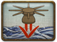

Mines
The primitive but effective naval mines used at this time consist of a bomb strapped to a wooden board. They will explode when a ship hits them. Mines can be positioned and primed during the deployment phase (remaining in place once the battle starts) or be dropped during the battle. They will only become visible to the enemy at close range when it may already be too late to do anything about them. Since it is not possible to adjust the position of mines after the deployment phase, it is vital that care is taken in their placement - mines will destroy friendly ships too!